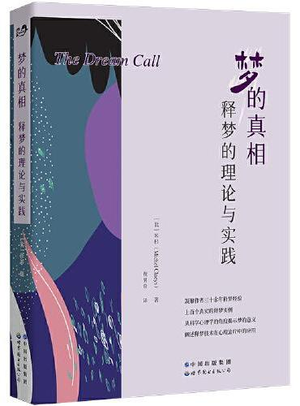

THE BOOKS
梦的真相
梦工作与内在探索

封面与团队公开海报所列版本一致
2021 · 世界图书出版公司
梦的真相
释梦的理论与实践
以梦的记录、理解和转译为线索，介绍米杉如何把梦带入个人探索、团体学习和咨询工作。
内容介绍
梦中的人物、场景和情绪并非简单的固定符号。米杉结合实例讨论怎样从梦者自身的经验出发，辨认梦与现实生活的关联，并把梦作为理解内在空间的材料。
本书关注
- 记录梦及梦中的情绪、人物与场景。
- 在梦者自己的生活语境中理解梦的意象。
- 探索梦所呈现的受伤经验与内在资源。
适合谁阅读
适合对梦的理解与梦工作感兴趣的读者，以及希望把梦带入专业学习的人。
版本与书目
本站展示海报所列的 2021 年版；2010 年旧版书名副题及 ISBN 不同。
- 作者
- 米杉 Michel Claeys Bouuaert
- 出版年份
- 2021
- 出版社
- 世界图书出版公司
- ISBN
- 9787519289423
外部书店的库存、价格与配送方式以页面实时信息为准。本站不提供图书下载。